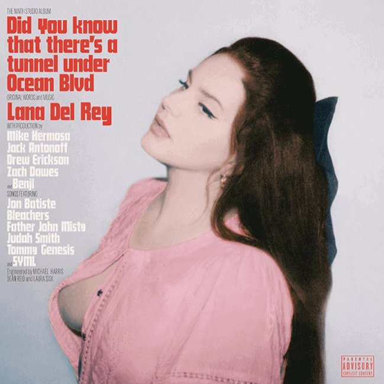

♡ Poemas ♡
Lana Del Rey é uma compositora de poemas, teve varias inspirações como, Marilyn Monroe, Billie Holliday, Jim Morrison, mas sua maior inspiração se refere a romancista Sylvia Plath reconhecida por sua obra poética.
Sylvia Plath detalhou em Redoma de Vidro (seu livro), seu romance auto-biográfico sua constante luta contra a depressão, Lana Del Rey se inspira em parte na escritora, “hope is a dangerous thing for a woman like me to have – but i have it", música do album Norman Fucking Rockwell, cujo a letra diz “Eu estive flutuando por aí de camisola / Sylvia Plath 24 horas por dia / Escrevendo nas paredes com sangue / Porque a tinta da minha caneta não funciona no meu bloco de notas / Não pergunte se estou feliz, você sabe que não estou." mostra sua homenagem a poetisa.

Composições
♡ "Só vale a pena viver se alguém está te amando."
♡ "Eu te amarei até o fim dos tempos
Eu esperaria um milhão de anos."
♡ "Tenho tentado muito não entrar em problemas, mas eu tenho uma guerra em minha mente."
♡ "Às vezes o amor não é o bastante e a estrada fica difícil."
♡ "Ninguém nunca me tocou sem querer me matar."
♡ "Eu sou apenas uma alma com boas intenções. Ó Senhor, por favor, não me deixe ser mal interpretada."
♡ "O dinheiro é o hino do sucesso, então coloque rímel e seu vestido de festa."
♡ "Eu estou cansada de me sentir como se eu estivesse louca."